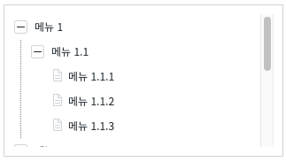
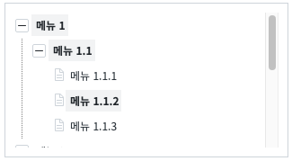
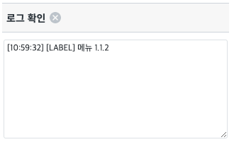
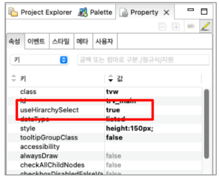

TreeView의 useHirachySelect 속성을 사용해 하위 노드를 선택 할 때 상위 노드에 같이 선택 효과를 주는 예제입니다.
하위 노드 선택할 때 상위에 같이 선택 효과 주기
STEP 1. 초기 상태를 확인합니다.
그림 1.브라우저(Chrome) 실행 예시

STEP 2. 노드를 클릭해서 선택합니다.
하위 노드 선택 시 상위 노드도 함께 선택되는 것을 확인합니다.
그림 2.브라우저(Chrome) 실행 예시

STEP 3. 선택한 노드 Label 보기 버튼을 클릭해서 로그 확인 영역에서 결과를 확인합니다.
그림 3.브라우저(Chrome) 실행 예시

TreeView를 선택하고 useHirachySelect 속성을 "true"로 설정합니다.
그림 4.Property 탭 설정

// TreeView useHirarchySelect 옵션 적용 <w2:treeview ... useHirarchySelect="true" ...> // 중략 </w2:treeview>
useHirarchySelect